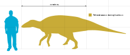
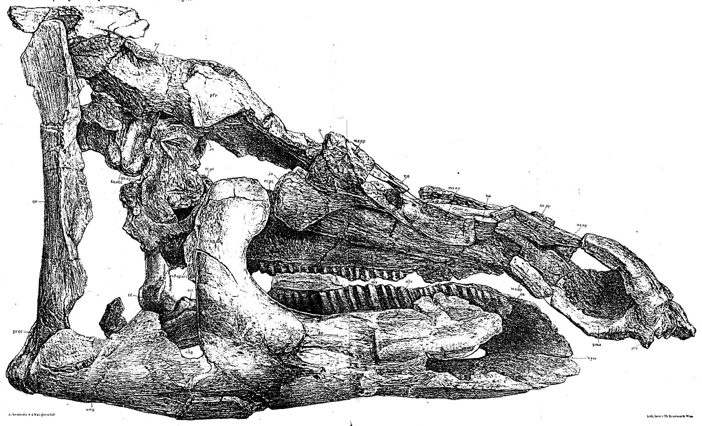
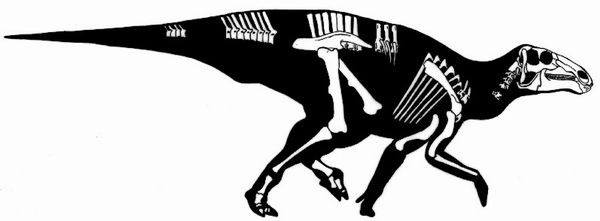
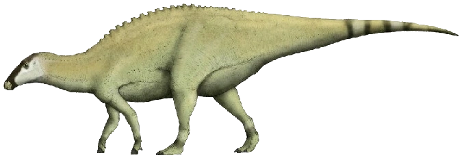

Română
Telmatosaurus sau Șopârla de mlaștină a fost un dinozaur întâlnit în România, mai exact în Transilvania și Regiunea Sânpetru, care trăia în perioada Maastrichtian din Cretacic. Denumit în 1903 de către Franz Nopsca, atingea în jur de 5 metri lungime și era erbivor.
English
Telmatosaurus or Swamp Lizard was a dinosaur found in Romania, more precisely in Transylvania and the Sânpetru Region, which lived in the Maastrichtian period of the Cretaceous. Named in 1903 by Franz Nopsca, it reached around 5 meters in length and was herbivorous.